Optimization of sampling strata with the SamplingStrata package
Giulio Barcaroli
2020-01-07
SamplingStrata.RmdIntroduction
Let us suppose we need to design a sample survey, having a complete frame containing information on the target population (identifiers plus auxiliary information). If our sample design is a stratified one, we need to choose how to form strata in the population, in order to get the maximum advantage by the available auxiliary information. In other words, we have to decide in which way to combine the values of the auxiliary variables (from now on, the ‘X’ variables) in order to determine a new variable, called ‘stratum’. To do so, we have to take into consideration the target variables of our sample survey (from now on, the ‘Y’ variables): if, to form strata, we choose the X variables most correlated to the Y’s, the efficiency of the samples drawn by the resulting stratified frame may be greatly increased. In order to handle the whole auxiliary information in a homogenous way, we have to reduce continuous data to categorical (by mean of a k-means clustering technique, for example). Then, for every set of candidate auxiliary variables X’s, we have to decide (i) what variables to consider as active variables in strata determination, and (ii) for each active variable, what set of values (in general, what aggregation of atomic values) have to be considered. Every combination of values of each active variable determine a particular stratification of the target population, i.e. a possible solution to the problem of ‘best’ stratification. Here, by best stratification, we mean the stratification that ensures the minimum sample cost, sufficient to satisfy a set of precision constraints, set on the accuracy of the estimates of the survey target variables Y’s (constraints expressed as maximum allowable sampling variance on estimates in different domains of interest). When the cost of data collection is uniform over the strata, then the total cost is directly proportional to the overall sample size, and the convenience of a particular stratification can be measured by the associated size of the sample, whose estimates are expected to satisfy given accuracy levels. This minimum size can be determined by applying the Bethel algorithm, with its Chromy variant. In general, the number of possible alternative stratifications for a given population may be very high, depending on the number of variables and on the number of their values, and in these cases it is not possible to enumerate them in order to assess the best one. A very convenient solution to this, is the adoption of the evolutionary approach, consisting in applying a genetic algorithm that may converge towards a near-optimal solution after a finite number of iterations. The methodology is fully described in Ballin and Barcaroli (2013), and a complete illustration of the package, together with a comparison with the stratification package, is in Barcaroli (2014). Also a complete application in a case of network data is reported in Ballin and Barcaroli (2016). The implementation of the genetic algorithm is based on a modification of the functions in the genalg package (see Willighagen 2005). In particular, the crossover operator ha been modified on the basis of the indications given by O’Luing, Prestwich, and Tarim (2019).
Procedural steps
The optimization of the sampling design starts by making the sampling frame available, defining the target estimates of the survey and establishing the precision constraints on them. It is then possible to determine the best stratification and the optimal allocation. Finally, we proceed with the selection of the sample. Formalizing, these are the required steps:
- analysis of the frame data: identification of available auxiliary information;
- manipulation of auxiliary information: in case auxiliary variables are of the continuous type, they must be transformed into a categorical form;
- construction of atomic strata: on the basis of the categorical auxiliary variables available in the sampling frame, a set of strata can be constructed by calculating the Cartesian product of the values of all the auxiliary variables;
- characterization of each atomic stratum with the information related to the target variables: in order to optimise both strata and allocation of sampling units in strata, we need information on the distributions of the target variables (means and standard deviations) inside the different strata;
- choice of the precision constraints for each target estimate, possibly differentiated by domain;
- optimization of stratification and determination of required sample size and allocation in order to satisfy precision constraints on target estimates;
- analysis of the resulting optimized strata;
- association of new labels to sampling frame units, each of them indicating the new strata resulting by the optimal aggregation of the atomic strata;
- selection of units from the sampling frame with a selection scheme;
- evaluation of the found optimal solution in terms of expected precision and bias.
In the following, we will illustrate each step starting from a real sampling frame, the one that comes with the R package sampling (the dataframe swissmunicipalities).
Analysis of the frame data and manipulation of auxiliary information
As a first step, we have to define a frame dataframe containing the following information:
- a unique identifier of the unit (no restriction on the name, may be ‘cod’);
- the values of m auxiliary variables (named from X1 to Xm);
- the (optional) values of p target variables (named from Y1 to Yp);
- the value of the domain of interest for which we want to produce estimates (named ‘domainvalue’).
By typing the following statements in the R environment:
library(SamplingStrata)
#> Carico il pacchetto richiesto: memoise
#> Carico il pacchetto richiesto: doParallel
#> Carico il pacchetto richiesto: foreach
#> Carico il pacchetto richiesto: iterators
#> Carico il pacchetto richiesto: parallel
#> Carico il pacchetto richiesto: pbapply
#> Carico il pacchetto richiesto: formattable
require(memoise)
data(swissmunicipalities)we get the swissmunicipalities dataframe, that contains 2896 observations (each observation refers to a Swiss municipality). Among the others, there are the following variables (data are referred to 2003):
- REG: Swiss region
- Nom: municipality name
- Surfacesbois: wood area
- Surfacescult: area under cultivation
- Alp: mountain pasture area
- Airbat: area with buildings
- Airind: industrial area
- Pop020: number of men and women aged between 0 and 19
- Pop2040: number of men and women aged between 20 and 39
- Pop4065: number of men and women aged between 40 and 64
- Pop65P: number of men and women aged between 65 and over
- POPTOT: total population
Let us suppose we want to plan a survey whose target estimates are the totals of population by age class in each Swiss region. In this case, our Y variables will be:
- Y1: number of men and women aged between 0 and 19
- Y2: number of men and women aged between 20 and 39
- Y3: number of men and women aged between 40 and 64
- Y4: number of men and women aged between 65 and over
As for the auxiliary variables (X’s), we can use all of those characterising the area use (wood, mountain or pasture, cultivated, industrial, with buildings).
Finally, we want to produce estimates not only for the whole country, but also for each one of the seven different regions.
Function buildFrameDF permits to organize data in a suitable mode for next processing:
swissmunicipalities$id <- c(1:nrow(swissmunicipalities))
swissframe <- buildFrameDF(df = swissmunicipalities,
id = "id",
X = c("POPTOT",
"Surfacesbois",
"Surfacescult",
"Alp",
"Airbat",
"Airind"),
Y = c("Pop020",
"Pop2040",
"Pop4065",
"Pop65P"),
domainvalue = "REG")
str(swissframe)
#> 'data.frame': 2896 obs. of 12 variables:
#> $ id : int 1 2 3 4 5 6 7 8 9 10 ...
#> $ X1 : int 363273 177964 166558 128634 124914 90483 72626 59496 48655 40377 ...
#> $ X2 : int 2326 67 97 1726 1635 2807 1139 408 976 425 ...
#> $ X3 : int 967 31 93 1041 714 1827 1222 183 196 694 ...
#> $ X4 : int 0 0 0 0 0 0 0 0 18 0 ...
#> $ X5 : int 2884 773 1023 1070 856 972 812 524 463 523 ...
#> $ X6 : int 260 60 213 212 64 238 134 27 108 137 ...
#> $ Y1 : int 57324 32429 28161 19399 24291 18942 14337 9533 9127 8128 ...
#> $ Y2 : int 131422 60074 50349 44263 44202 28958 24309 18843 14825 11265 ...
#> $ Y3 : int 108178 57063 53734 39397 35421 27696 21334 18177 15140 13301 ...
#> $ Y4 : int 66349 28398 34314 25575 21000 14887 12646 12943 9563 7683 ...
#> $ domainvalue: int 4 1 3 2 1 4 5 6 2 2 ...As the X variables are of the continuous type, first we have to reduce them in a categorical (ordinal) form.
A suitable way to do so, is to apply a k-means clustering method (see Hartigan and Wong 1979) by using the function var.bin:
library(SamplingStrata)
swissframe$X1 <- var.bin(swissmunicipalities$POPTOT, bins=18)
swissframe$X2 <- var.bin(swissmunicipalities$Surfacesbois, bins=3)
swissframe$X3 <- var.bin(swissmunicipalities$Surfacescult, bins=3)
swissframe$X4 <- var.bin(swissmunicipalities$Alp, bins=3)
swissframe$X5 <- var.bin(swissmunicipalities$Airbat, bins=3)
swissframe$X6 <- var.bin(swissmunicipalities$Airind, bins=3)Now, we have six different auxiliary variables of the categorical type, the first with 18 different modalities, the others with 3 modalities.
In any case, this dataframe comes with the package SamplingStrata: it can be made available by executing:
library(SamplingStrata)
data(swissframe)
head(swissframe)
#> progr REG X1 X2 X3 X4 X5 X6 id Y1 Y2 Y3 Y4 domainvalue
#> 1 1 4 18 3 2 1 3 3 Zurich 57324 131422 108178 66349 4
#> 2 2 1 17 1 1 1 3 2 Geneve 32429 60074 57063 28398 1
#> 3 3 3 17 1 1 1 3 3 Basel 28161 50349 53734 34314 3
#> 4 4 2 17 2 3 1 3 3 Bern 19399 44263 39397 25575 2
#> 5 5 1 17 2 2 1 3 2 Lausanne 24291 44202 35421 21000 1
#> 6 6 4 16 3 3 1 3 3 Winterthur 18942 28958 27696 14887 4We could also not indicate substantive X variables, if we want that each unit in the sampling frame be considered as an atomic stratum, and let to the optimization step to aggregate them on the basis of the values of the Y variable. In any case, as we have to indicate at least one X variable, we can use to this purpose the unique identifier in the frame:
swissmunicipalities$id <- c(1:nrow(swissframe))
newframe <- buildFrameDF(df = swissmunicipalities,
id = "id",
X = "id",
Y = c("Pop020",
"Pop2040",
"Pop4065",
"Pop65P"),
domainvalue = "REG")
str(newframe)
#> 'data.frame': 2896 obs. of 7 variables:
#> $ id : int 1 2 3 4 5 6 7 8 9 10 ...
#> $ X1 : int 1 2 3 4 5 6 7 8 9 10 ...
#> $ Y1 : int 57324 32429 28161 19399 24291 18942 14337 9533 9127 8128 ...
#> $ Y2 : int 131422 60074 50349 44263 44202 28958 24309 18843 14825 11265 ...
#> $ Y3 : int 108178 57063 53734 39397 35421 27696 21334 18177 15140 13301 ...
#> $ Y4 : int 66349 28398 34314 25575 21000 14887 12646 12943 9563 7683 ...
#> $ domainvalue: int 4 1 3 2 1 4 5 6 2 2 ...Choice of the precision constraints for each target estimate
The errors dataframe contains the accuracy constraints that are set on target estimates. This means to define a maximum coefficient of variation for each variable and for each domain value. Each row of this frame is related to accuracy constraints in a particular subdomain of interest, identified by the domainvalue value. In the case of the Swiss municipalities, we have chosen to define the following constraints:
data(swisserrors)
swisserrors
#> DOM CV1 CV2 CV3 CV4 domainvalue
#> 1 DOM1 0.08 0.12 0.08 0.12 1
#> 2 DOM1 0.08 0.12 0.08 0.12 2
#> 3 DOM1 0.08 0.12 0.08 0.12 3
#> 4 DOM1 0.08 0.12 0.08 0.12 4
#> 5 DOM1 0.08 0.12 0.08 0.12 5
#> 6 DOM1 0.08 0.12 0.08 0.12 6
#> 7 DOM1 0.08 0.12 0.08 0.12 7This example reports accuracy constraints on variables Y1, Y2, Y3 and Y4 that are the same for all the 7 different subdomains (Swiss regions) of domain level DOM1. Of course we can differentiate the precision constraints region by region. It is important to underline that the values of ‘domainvalue’ are the same than those in the frame dataframe, and correspond to the values of variable ‘DOM1’ in the strata dataframe. Once having defined dataframes containing frame data, strata information and precision constraints, it is worth while to check their internal and reciprocal coherence. It is possible to do that by using the function checkInput:
checkInput(errors = checkInput(errors = swisserrors,
strata = swissstrata,
sampframe = swissframe))
#>
#> Input data have been checked and are compliant with requirements
#>
#> No input data indicatedFor instance, this function controls that the number of auxiliary variables is the same in the frame and in the strata dataframes; that the number of target variables indicated in the frame dataframe is the same than the number of means and standard deviations in the strata dataframe, and the same than the number of coefficient of variations indicated in the errors dataframe.
If we try to determine the total size of the sample required to satisfy these precision constraints, considering the current stratification of the frame (the 641 atomic strata), we can do it by simply using the function bethel. This function requires a slightly different specification of the constraints dataframe:
because the bethel function does not permit to differentiate precision constraints by subdomain. In any case, the result of the application of the Bethel algorithm [see bethel:1989] is:
That is, the required amount of units to be selected, with no optimization of sampling strata. In general, after the optimization, this number is sensibly reduced.
Optimization of frame stratification
Once the strata and the constraints dataframes have been prepared, it is possible to apply the function that optimises the stratification of the frame, that is optimStrata. This function operates on all subdomains, identifying the best solution for each one of them. T he first fundamental parameter to be passed to optimStrata is method: this parameter allows to choose the method to be applied in the optimization step: (i) optimizeStrata (method = “atomic”); (ii) optimizeStrata2 (method = “continuous”); (iii) optimizeStrata (method = “spatial”).
The parameters common to all methods are:
| Parameter | Description |
|---|---|
| framesamp | The name of the dataframe containing the information related to the |
| sampling frame | |
| framecens | The name of the dataframe containing the units to be selected in any case. |
| It has same structure than “framesamp” dataframe | |
| nStrata | The number of strata to be obtained |
| model | In case the Y variables are not directly observed, but are estimated by |
| means of other explicative variables, in order to compute the anticipated | |
| variance, information on models are given by a dataframe “model” with as | |
| many rows as the target variables. Default is NULL. | |
| errors | The (mandatory) dataframe containing the precision levels expressed in |
| terms of maximum allowable coefficient of variation on a given estimate | |
| alldomains | Flag (TRUE/FALSE) to indicate if the optimization must be carried out on |
| all domains (default is TRUE). If it is set to FALSE, then a value must | |
| be given to parameter dom | |
| dom | Indicates the domain on which the optimization must be carried |
| minnumstr | Minimum number of units that must be allocated in each stratum |
| (default is 2) | |
| iter | Maximum number of iterations (= generations) of the genetic algorithm |
| (default is 50) | |
| pops | The dimension of each generations in terms of individuals (default is 20) |
| mut_chance | Mutation chance, that is for each new individual, the probability to |
| change each single chromosome, i.e. one bit of the solution vector. | |
| High values of this parameter allow a deeper exploration of the | |
| solution space, but at a slower convergence, while low values permit | |
| a faster convergence, but the final solution can be distant from the | |
| optimal one. Default is NA, in correspondence of which it is computed | |
| as 1/(vars+1) where vars is the length of elements in the solution | |
| elitism_rate | This parameter indicates the rate of better solutions that must be |
| preserved from one generation to another (default is 0.2) | |
| suggestions | Optional parameter for genetic algorithm that indicates a suggested solution |
| to be introduced in the initial population. The most convenient is the | |
| one found by the function “KmeanSolution” (default is NULL) | |
| writeFiles | Indicates if the various dataframes and plots produced during the execution |
| have to be written in the working directory (default is FALSE) | |
| showPlot | Indicates if the plot showing the trend in the value of the objective function |
| has to be shown or not. Default is TRUE. | |
| In parallel = TRUE, this defaults to FALSE | |
| parallel | To indicate if the optimization has to be run in parallel (default is TRUE) |
| cores | If the analysis is run in parallel, how many cores should be used. |
| If not specified n-1 of total available cores are used OR if number | |
| of domains < (n-1) cores, then number of cores equal to number of domains | |
| are used |
The parameters specific for method “spatial” are:
| Parameter | Description |
|---|---|
| fitting | Fitting (in terms of r squared) of the spatial model(s) (default is 1) |
| range | Maximum range for spatial autocorrelation. It is a vector with as many elements |
| as the number of target variables Y | |
| kappa | Constant used in evaluating spatial autocorrelation (default is 3) |
In the case of the Swiss municipalities, we choose the “atomic” method and make use of almost all of default values for parameters with the exception of the errors and strata dataframes, and for the option ‘writeFiles’:
solution <- optimStrata(
method = "atomic",
errors = swisserrors,
framesamp = swissframe,
parallel = TRUE,
writeFiles = FALSE,
showPlot = FALSE)
#>
#> Input data have been checked and are compliant with requirements
#>
#> Computations are being done on population data
#>
#> Number of strata: 641
#> ... of which with only one unit: 389
#> *** Starting parallel optimization for 7 domains using 5 cores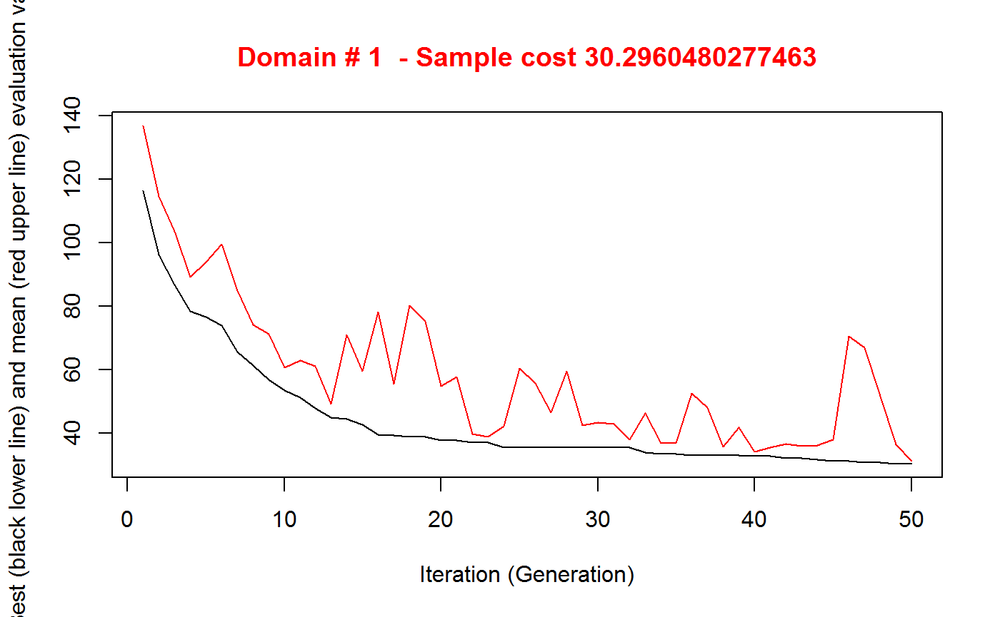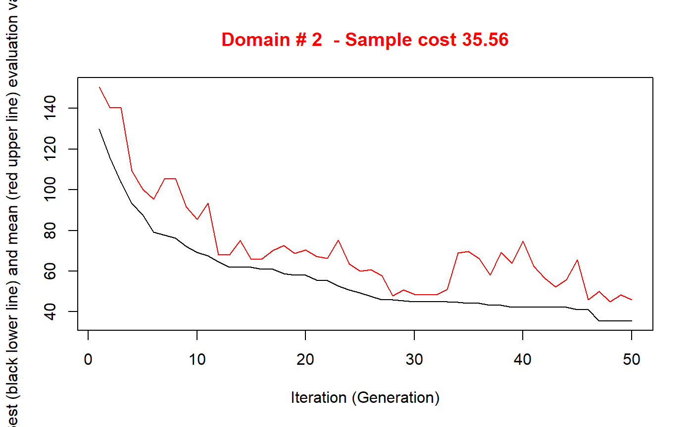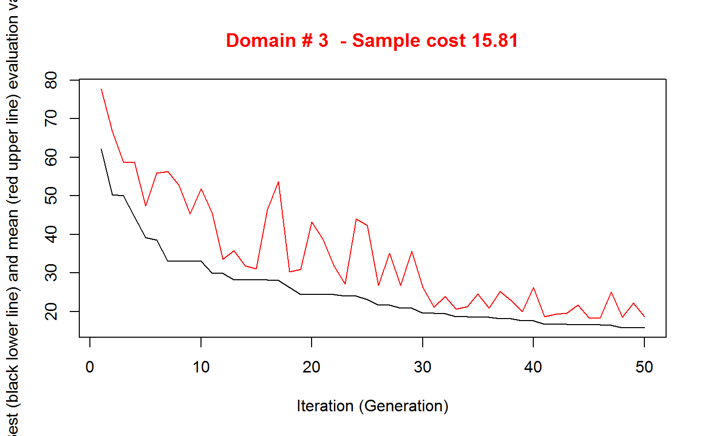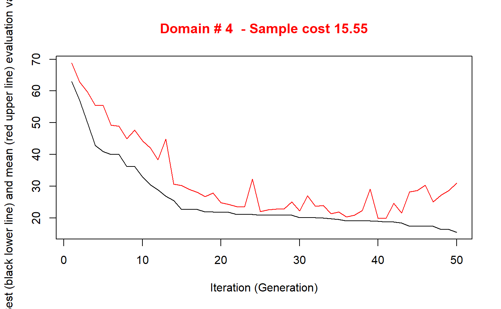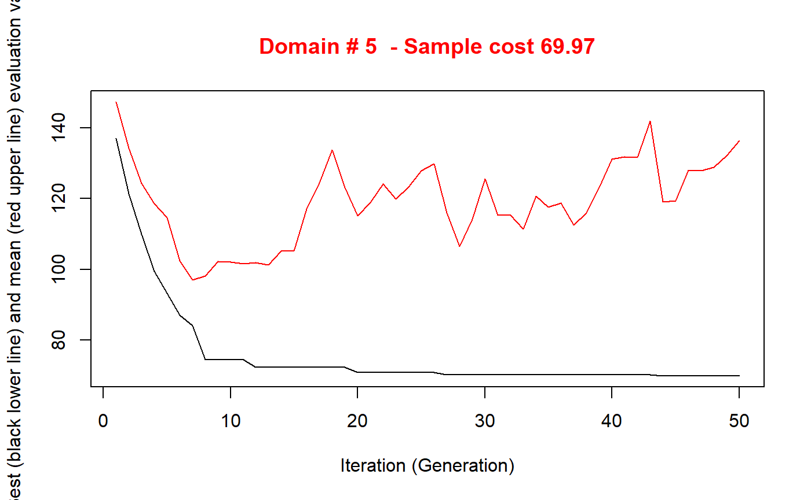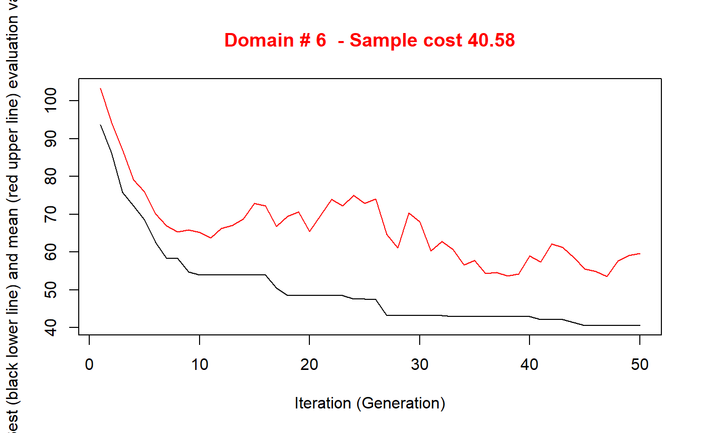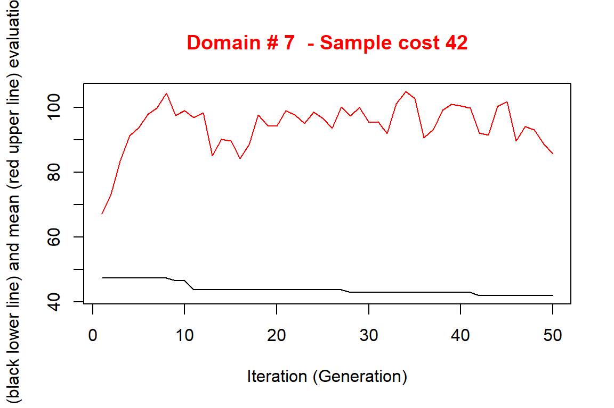
#>
#> *** Sample size : 372
#> *** Number of strata : 145
#> ---------------------------Note that by so doing the nStrata parameter is set equal to the number of atomic strata in each domain . Another possibility is to set a pre-determined value for each domain, for instance equal in each domain, as c(5,5,5,5,5,5,5,5).
The execution of optimStrata produces the solution of 7 different optimization problems, one for each domain.
The graphs illustrate the convergence of the solution to the final one starting from the initial one (i.e. the one related to the atomic strata). Along the x-axis are reported the executed iterations, from 1 to the maximum, while on the y-axis are reported the size of the sample required to satisfy precision constraints. The upper (red) line represent the average sample size for each iteration, while the lower (black) line represents the best solution found until the i-th iteration.
The results of the execution are contained in the list ‘solution’, composed by two elements:
- solution$indices: the vector of the indices that indicates to what aggregated stratum each atomic stratum belongs;
- solution$framenew: the initial frame updated with the indication, for each unit, of the optimal strata to which each unit belongs;
- solution$aggr_strata: the dataframe containing information on the optimal aggregated strata.
We can calculate the expected CV’s by executing the function:
expected_CV(solution$aggr_strata)
#> cv(Y1) cv(Y2) cv(Y3) cv(Y4)
#> DOM1 0.079 0.076 0.075 0.077
#> DOM2 0.072 0.070 0.071 0.074
#> DOM3 0.064 0.065 0.067 0.071
#> DOM4 0.075 0.071 0.073 0.073
#> DOM5 0.076 0.075 0.075 0.075
#> DOM6 0.080 0.080 0.080 0.082
#> DOM7 0.074 0.077 0.074 0.074and compare them to the set of precision constraints in order to verify the compliance:
Initial solution with kmeans clustering of atomic strata
In order to speed up the convergence towards the optimal solution, an initial one can be given as a “suggestion” to ‘optimizeStrata’ function. The function KmeansSolution produces this initial solution by clustering atomic strata considering the values of the means of all the target variables Y.
Also, the optimal number of clusters is determined inside each domain. If the default value for nstrata is used, then the number of aggregate strata is optimized by varying the number of cluster from 2 to number of atomic strata in each domain, divided by 2. Otherwise, it is possible to indicate a fixed number of aggregate strata to be obtained.
Other parameters are:
- minnumstrat: the minimum number of units to be allocated in each stratum(default is 2);
- maxcluster: the maximum number of clusters to be considered in the execution of kmeans algorithm;
- showPlot: if TRUE, allows to visualise the optimization.
For any given number of clusters, the correspondent aggregation of atomic strata is considered as input to the function ‘bethel’. The number of clusters for which the value of the sample size necessary to fulfil precision constraints is the minimum one, is retained as the optimal one.
The overall solution is obtained by concatenating optimal clusters obtained in domains. The result is a dataframe with two columns: the first indicates the clusters, the second the domains:
solutionKmeans1 <- KmeansSolution(swissstrata,
swisserrors,
nstrata=NA,
minnumstrat=2,
maxclusters=NA,
showPlot=FALSE)
#>
#> -----------------
#> Kmeans solution
#> -----------------
#> *** Domain: 1 ***
#> Number of strata: 9
#> Sample size : 18
#> *** Domain: 2 ***
#> Number of strata: 9
#> Sample size : 17
#> *** Domain: 3 ***
#> Number of strata: 7
#> Sample size : 13
#> *** Domain: 4 ***
#> Number of strata: 6
#> Sample size : 10
#> *** Domain: 5 ***
#> Number of strata: 7
#> Sample size : 13
#> *** Domain: 6 ***
#> Number of strata: 7
#> Sample size : 13
#> *** Domain: 7 ***
#> Number of strata: 8
#> Sample size : 15
head(solutionKmeans1)
#> suggestions domainvalue
#> 1 3 1
#> 2 3 1
#> 3 3 1
#> 4 3 1
#> 5 3 1
#> 6 3 1This solution can be given as argument to the parameter suggestion in the optimizeStrata function, together with the indication of which is the suitable number of strata to be obtained in each domain in the final solution, calculated as:
nstrat <- tapply(solutionKmeans1$suggestions, solutionKmeans1$domainvalue,
FUN=function(x) length(unique(x)))
nstrat
#> 1 2 3 4 5 6 7
#> 9 9 7 6 7 7 8solution_with_kmeans <- optimStrata(
method = "atomic",
errors = swisserrors,
framesamp = swissframe,
nStrata = nstrat,
suggestions = solutionKmeans1,
parallel = TRUE,
writeFiles = TRUE,
showPlot = FALSE)
#>
#> Input data have been checked and are compliant with requirements
#>
#> Computations are being done on population data
#>
#> Number of strata: 641
#> ... of which with only one unit: 389
#> *** Starting parallel optimization for 7 domains using 5 cores
#>
#> *** Sample size : 99
#> *** Number of strata : 53
#> ---------------------------
#> ...written output to C:/Users/Giulio/Google Drive/Sampling/SamplingStrata 1.5/SamplingStrata/vignettes/output /outstrata.txtthus obtaining a much more conventient solution than the one without the kmeans suggestion, with the same number of iterations.
Adjustment of the final sampling size
After the optimization step, the final sample size is the result of the allocation of units in final strata. This allocation is such that the precision constraints are expected to be satisfied. Actually, three possible situations may occur:
- the resulting sample size is acceptable;
- the resulting sample size is to high, it is not affordable with respect to the available budget;
- the resulting sample size is too low, the available budget permits to increase the number of units.
In the first case, no action is required. In the second case, it is necessary to reduce the number of units, by equally applying the same reduction rate in each stratum. In the third case, we could either to set more tight precision constraints, or proceed to increase the sample size by applying the same increase rate in each stratum. This increase/reduction process is iterative, as by applying the same rate we could find that in some strata there are not enough units to increase or to reduce. The function adjustSize permits to obtain the desired final sample size. Let us suppose that the obtained sample size is not affordable. We can reduce it by executing the following code:
adjustedStrata <- adjustSize(size=280,strata=solution$aggr_strata,cens=NULL)
#>
#> 321
#> 308
#> 307
#> 307
#> Final adjusted size: 307
sum(adjustedStrata$SOLUZ)
#> [1] 307Instead, if we want to increase the size because the budget allows to do this, then this is the code:
adjustedStrata <- adjustSize(size=400,strata=solution$aggr_strata,cens=NULL)
#>
#> 384
#> 384
#> Final adjusted size: 384
sum(adjustedStrata$SOLUZ)
#> [1] 384The difference between the desired sample size and the actual adjusted size depends on the number of strata in the optimized solution. Consider that the adjustment is performed in each stratum by taking into account the relative difference between the current sample size and the desired one: this produces an allocation that is expressed by a real number, that must be rounded, while taking into account the requirement of the minimum number of units in the strata. The higher the number of strata, the higher the impact on the final adjusted sample size.
Analysis of results
This function has two purposes:
- instrumental to the processing of the sampling frame (attribution of the labels of the optimized strata to the population units);
- analysis of the aggregation of the atomic strata obtained in the optimized solution.
The function updateStrata assigns the labels of the new strata to the initial one in the dataframe strata, and produces:
- a new dataframe named newstrata containing all the information in the strata dataframe, plus the labels of the new optimized strata;
- a table, contained in the dataset strata_aggregation.txt, showing in which way each optimized stratum aggregates the auxiliary variables X’s.
The function is invoked in this way:
newstrata <- updateStrata(swissstrata,
solution,
writeFiles = TRUE)Now, the atomic strata are associated to the aggregate strata defined in the optimal solution, by means of the variable LABEL. If we want to analyse in detail the new structure of the stratification, we can look at the strata_aggregation.txt file:
strata_aggregation <- read.delim("strata_aggregation.txt")
head(strata_aggregation)
#> DOM1 AGGR_STRATUM X1 X2 X3 X4 X5 X6
#> 1 1 1 1 1 1 1 1 1
#> 2 1 1 3 3 1 2 1 1
#> 3 1 1 3 3 2 2 1 1
#> 4 1 1 4 1 1 2 1 1
#> 5 1 1 5 1 1 1 1 2
#> 6 1 1 6 3 3 3 2 1In this structure, for each aggregate stratum the values of the X’s variables in each contributing atomic stratum are reported. It is then possible to understand the meaning of each aggregate stratum produced by the optimization.
Selection of the sample
Once the optimal stratification has been obtained, it is possible to select the sample from the new version of the frame, taking into account the optimal stratification and allocation:
framenew <- solution$framenew
outstrata <- solution$aggr_strata
sample <- selectSample(framenew, outstrata, writeFiles=FALSE)
#>
#> *** Sample has been drawn successfully ***
#> 372 units have been selected from 145 strata
#>
#> ==> There have been 35 take-all strata
#> from which have been selected 69 unitsWhen the option writeFiles is set to TRUE, it produces two .csv files:
- sample.csv containing the units of the frame that have been selected, together with the weight that has been calculated for each one of them;
- sample.chk.csv containing information on the selection: for each stratum, the number of units in the population, the planned sample, the number of selected units, the sum of their weights that must equalise the number of units in the population.
The selectSample operates by drawing a simple random sampling in each stratum.
A variant of this function is selectSampleSystematic. The only difference is in the method used for selecting units in each strata, that is by executing the following steps:
- a selection interval is determined by considering the inverse of the sampling rate in the stratum;
- a starting point is determined by selecting a value in this interval;
- the selection proceeds by selecting as first unit the one corresponding to the above value, and then selecting all the units individuated by adding the selection interval.
This selection method can be useful if associated to a particular ordering of the selection frame, where the ordering variable(s) can be considered as additional stratum variable(s). For instance, we could decide that it could be important to consider the overall population in municipalities when selecting units. Here is the code:
# adding POPTOT to framenew
data("swissmunicipalities")
framenew <- merge(framenew,swissmunicipalities[,c("REG","Nom","POPTOT")],
by.x=c("REG","ID"),by.y=c("REG","Nom"))
# selection of sample with systematic method
sample <- selectSampleSystematic(frame=framenew,
outstrata=solution$aggr_strata,
sortvariable = c("POPTOT"))
#>
#> *** Sample has been drawn successfully ***
#> 372 units have been selected from 145 strata
#>
#> ==> There have been 35 take-all strata
#> from which have been selected 69 units
head(sample,3)
#> DOMAINVALUE STRATO REG ID STRATUM PROGR X1 X2 X3 X4 X5 X6
#> 1 1 1 1 Bussy-sur-Moudon 1*1*1*1*1*1 2533 1 1 1 1 1 1
#> 2 1 1 1 Hermenches 1*1*1*1*1*1 2294 1 1 1 1 1 1
#> 3 1 1 1 La Praz 1*1*1*1*1*1 2697 1 1 1 1 1 1
#> Y1 Y2 Y3 Y4 LABEL POPTOT WEIGHTS FPC
#> 1 42 47 64 33 1 186 47.75 0.02094241
#> 2 66 83 89 46 1 284 47.75 0.02094241
#> 3 28 22 48 19 1 117 47.75 0.02094241Evaluation of the found solution
In order to be confident about the quality of the found solution, the function evalSolution allows to run a simulation, based on the selection of a desired number of samples from the frame to which the stratification, identified as the best, has been applied. The user can invoke this function also indicating the number of samples to be drawn:
eval <- evalSolution(framenew,
solution$aggr_strata,
nsampl=200,
writeFiles=FALSE,
progress=FALSE) 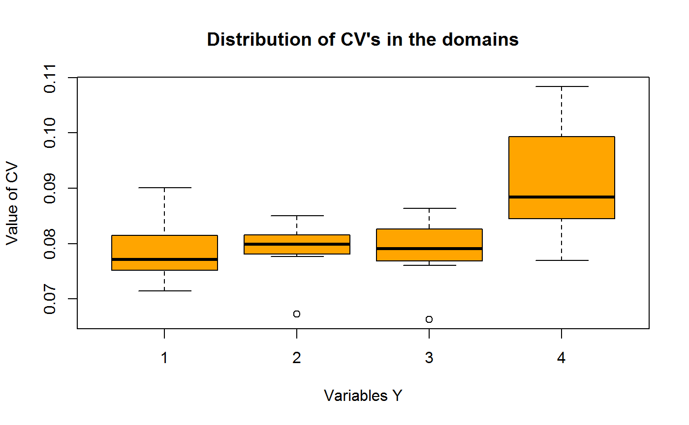
For each drawn sample, the estimates related to the Y’s are calculated. Their mean and standard deviation are also computed, in order to produce the CV related to each variable in every domain. These CV’s can be inspected and compared to the constraints:
eval$coeff_var
#> CV1 CV2 CV3 CV4 dom
#> 1 0.0861 0.0829 0.0819 0.0824 DOM1
#> 2 0.0757 0.0752 0.0776 0.0818 DOM2
#> 3 0.0621 0.0645 0.0667 0.0719 DOM3
#> 4 0.0825 0.0773 0.0789 0.0769 DOM4
#> 5 0.0793 0.0796 0.0796 0.0810 DOM5
#> 6 0.0809 0.0830 0.0833 0.0843 DOM6
#> 7 0.0787 0.0822 0.0754 0.0801 DOM7
swisserrors
#> DOM CV1 CV2 CV3 CV4 domainvalue
#> 1 DOM1 0.08 0.12 0.08 0.12 1
#> 2 DOM1 0.08 0.12 0.08 0.12 2
#> 3 DOM1 0.08 0.12 0.08 0.12 3
#> 4 DOM1 0.08 0.12 0.08 0.12 4
#> 5 DOM1 0.08 0.12 0.08 0.12 5
#> 6 DOM1 0.08 0.12 0.08 0.12 6
#> 7 DOM1 0.08 0.12 0.08 0.12 7These values are on average compliant with the precision constraints set.
We can also inspect the relative bias:
eval$rel_bias
#> y1 y2 y3 y4 dom
#> 1 -0.0043 -0.0015 -0.0033 0.0010 DOM1
#> 2 0.0000 0.0007 -0.0004 -0.0006 DOM2
#> 3 0.0044 0.0050 0.0028 0.0038 DOM3
#> 4 -0.0131 -0.0115 -0.0117 -0.0067 DOM4
#> 5 -0.0002 0.0011 0.0014 0.0009 DOM5
#> 6 0.0005 -0.0011 0.0001 0.0011 DOM6
#> 7 0.0043 0.0057 0.0070 0.0103 DOM7It is also possible to analyse the sampling distribution of the estimates for each variable of interest in a selected domain:
dom = 1
hist(eval$est$Y1[eval$est$dom == dom], col = "grey", border = "white",
xlab = expression(hat(Y)[1]),
freq = FALSE,
main = paste("Variable Y1 Domain ",dom,sep=""))
abline(v = mean(eval$est$Y1[eval$est$dom == dom]), col = "blue", lwd = 2)
abline(v = mean(swissframe$Y1[swissframe$domainvalue==dom]), col = "red")
legend("topright", c("distribution mean", "true value"),
lty = 1, col = c("blue", "red"), box.col = NA, cex = 0.8)
Handling ‘take-all’ strata in the optimization step
As input to the optimization step, together with proper sampling strata, it is also possible to provide take-all strata. These strata will not be subject to optimisation as the proper strata, but they will contribute to the determination of the best stratification, as their presence in a given domain will permit to satisfy precision constraint with a lower number of units belonging to proper sampling strata.
In order to correctly execute the optimization and further steps, it is necessary to perform a pre-processing of the overall input. The first step to be executed consists in the bi-partition of units to be censused and of units to be sampled, in order to build two different frames. As an example, we take the units with the highest values of the auxiliary variables as the ones to be selected in any case:
data(swisserrors)
data(swissstrata)
data(swissframe)
#----Selection of units to be censused from the frame
ind_framecens <- which(swissframe$X1 > 12 |
swissframe$X2 > 2 |
swissframe$X3 > 2 |
swissframe$X4 > 2 |
swissframe$X5 > 2 |
swissframe$X6 > 2 )
framecens <- swissframe[ind_framecens,]
nrow(framecens)
#> [1] 302
#----Selection of units to be sampled from the frame
# (complement to the previous)
framesamp <- swissframe[-ind_framecens,]
nrow(framesamp)
#> [1] 2594In this way, we have included all units to be surely selected in ‘framecens’, and the remaining in ‘framesamp’. At the end of the process, the sample will be selected only from ‘framesamp’, while the units in ‘framecens’ will be simply added to the sample.
We can obtain census strata and sampling strata by applying buildStrataDF respectively to framecens and framesamp:
# Build strata to be censused and sampled
cens <- buildStrataDF(framecens,progress = FALSE)
#>
#> Computations are being done on population data
#>
#> Number of strata: 231
#> ... of which with only one unit: 187
sum(cens$N)
#> [1] 302
strata <- buildStrataDF(framesamp,progress = FALSE)
#>
#> Computations are being done on population data
#>
#> Number of strata: 410
#> ... of which with only one unit: 202
sum(strata$N)
#> [1] 2594and
Now we have all required inputs to run ‘optimStrata’ in presence of the ‘take-all’ strata:
solution <- optimStrata(
method = "atomic",
errors = swisserrors,
framesamp = framesamp,
framecens = framecens,
writeFiles = FALSE
)
#>
#> Input data have been checked and are compliant with requirements
#>
#> Input data have been checked and are compliant with requirements
#>
#> Computations are being done on population data
#>
#> Number of strata: 410
#> ... of which with only one unit: 202
#> Computations are being done on population data
#>
#> Number of strata: 231
#> ... of which with only one unit: 187
#> *** Starting parallel optimization for 7 domains using 5 cores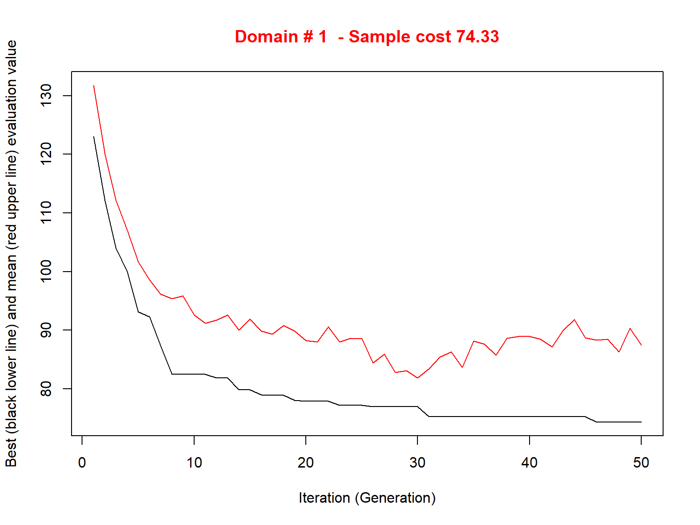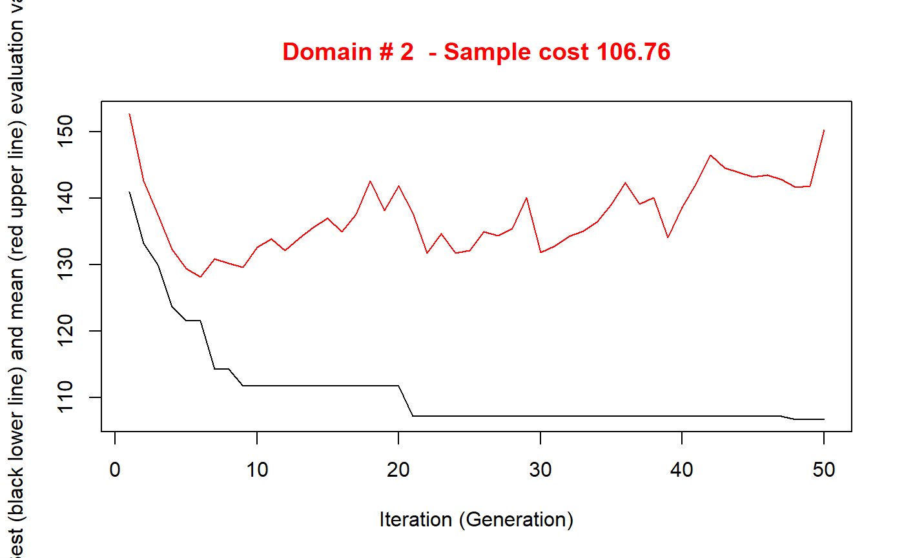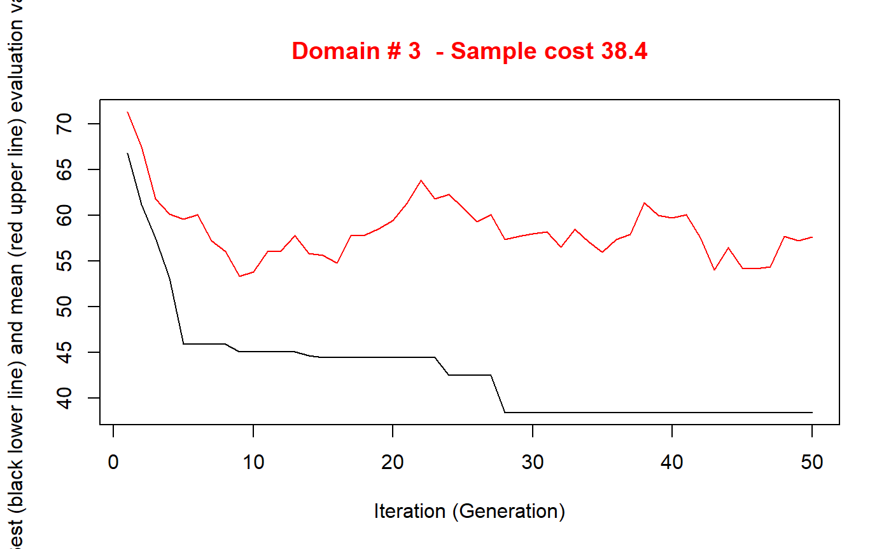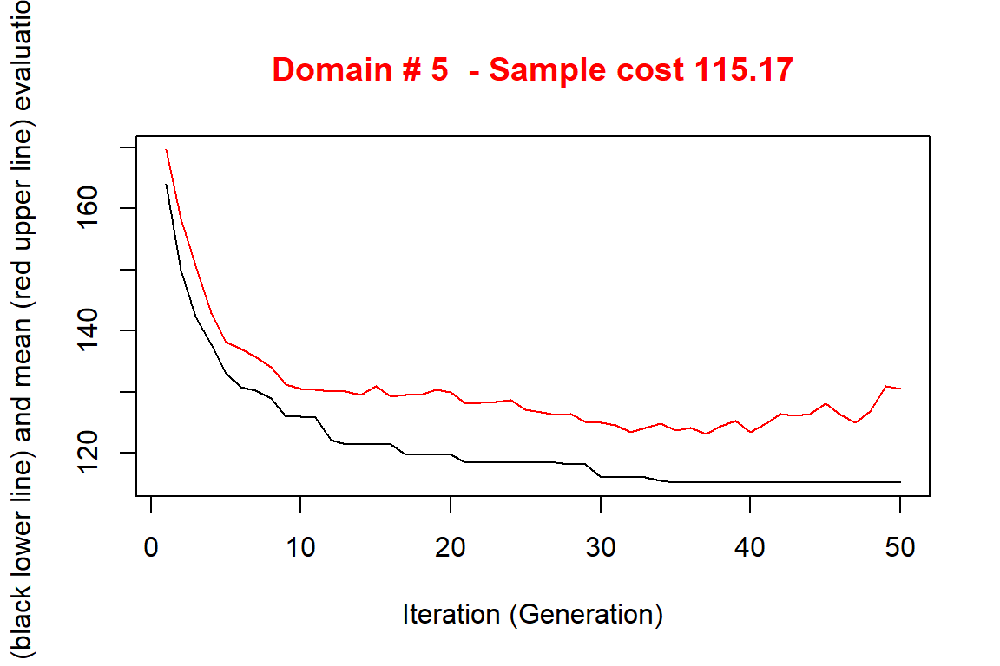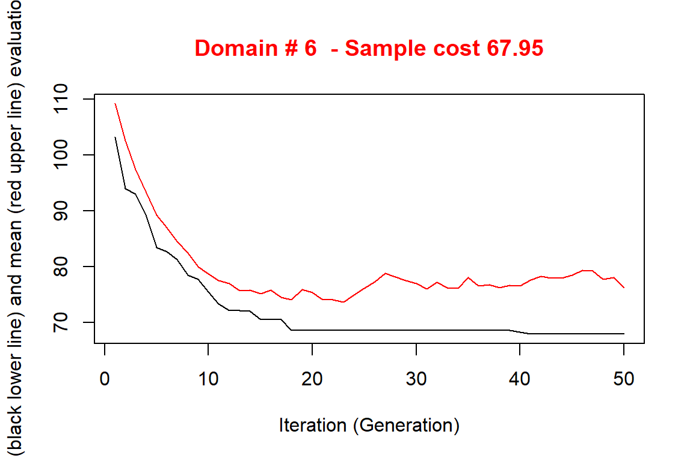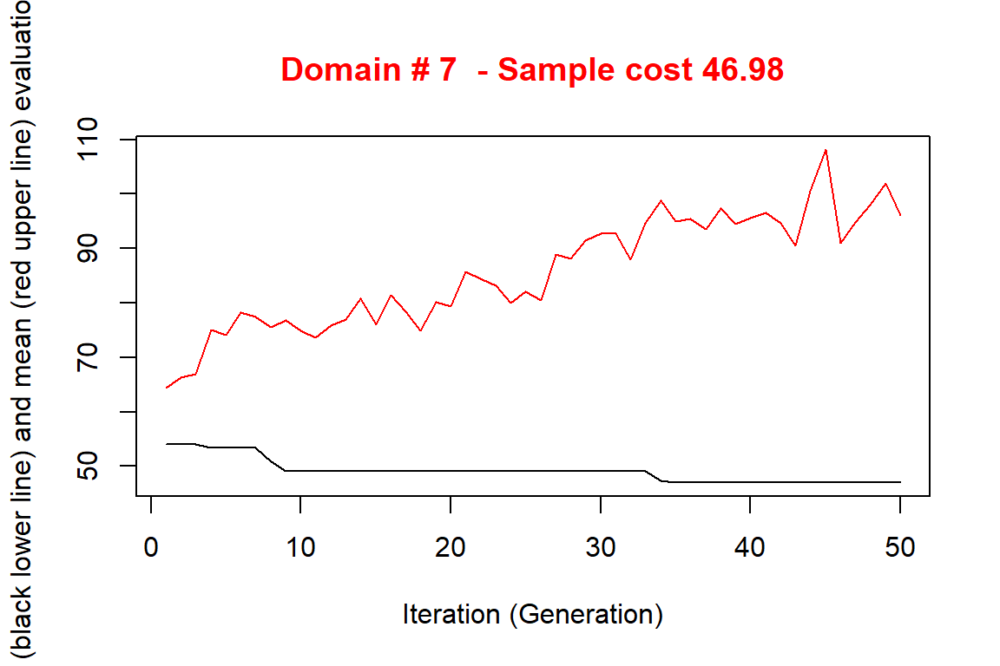
#>
#> *** Sample size : 173
#> *** Number of strata : 60
#> ---------------------------Once the optimized solution has been produced, the next steps are executed by considering only the sampling part of the frame:
# selection of sample from sampling strata
sample <- selectSample(frame=solution$framenew,outstrata=solution$aggr_strata)
#>
#> *** Sample has been drawn successfully ***
#> 173 units have been selected from 60 strata
#>
#> ==> There have been 7 take-all strata
#> from which have been selected 9 unitsFinally, the units in the ‘take-all’ strata can be added to sampled ones. First, the census frame needs to be made homogeneous to the sample frame in order to permit the ‘rbind’ step:
# addition of necessary variables to
colnames(framesamp) <- toupper(colnames(framesamp))
colnames(framecens) <- toupper(colnames(framecens))
framecens$WEIGHTS <- rep(1,nrow(framecens))
framecens$FPC <- rep(1,nrow(framecens))
framecens$LABEL <- rep("999999",nrow(framecens))
framecens$STRATUM <- rep("999999",nrow(framecens))
framecens$STRATO <- rep("999999",nrow(framecens))The overall set of units to be surveyed is obtainable in this way:
survey <- rbind(sample,framecens)and this is the proportion of sampling and censused units:
In order to verify compliance to the precision constraint, we perform the following:
cens2 <- cens[,-c(14:19)]
cens2$SOLUZ <- cens2$N
stratatot <- rbind(solution$aggr_strata,cens2)
expected_CV(stratatot)
#> cv(Y1) cv(Y2) cv(Y3) cv(Y4)
#> DOM1 0.080 0.077 0.075 0.071
#> DOM2 0.075 0.072 0.077 0.080
#> DOM3 0.077 0.075 0.073 0.077
#> DOM4 0.072 0.063 0.071 0.077
#> DOM5 0.079 0.079 0.076 0.074
#> DOM6 0.072 0.076 0.078 0.082
#> DOM7 0.076 0.078 0.078 0.085Handling Anticipated Variance
In the previous sections it has been assumed that, when optimizing the stratification of a sampling frame, values of the target variables Y’s are available for the generality of the units in the frame, or at least for a sample of them by means of which it is possible to estimate means and standard deviation of Y’s in atomic strata. Of course, this assumption is seldom expected to hold. The situation in which some proxy variables are available in the frame is much more likely to happen. In these situations, instead of directly indicating the real target variables, proxy ones are named as Y’s. By so doing, there is no guarantee that the final stratification and allocation can ensure the compliance to the set of precision constraints.
In order to take into account this problem, and to limit the risk of overestimating the expected precision levels of the optimized solution, it is possible to carry out the optimization by considering, instead of the expected coefficients of variation related to proxy variables, the anticipated coefficients of variation (ACV) that depend on the model that is possile to fit on couples of real target variables and proxy ones. In the current implementation, only models linking continuous variables can be considered. The definition and the use of these models is the same that has been implemented in the package stratification (see Baillargeon and Rivest 2014). In particular, the reference here is to two different models, the linear model with heteroscedasticity:
\[Y=beta\times X + epsilon\]
where
\[epsilon \sim N(0,sig2 X^{gamma})\]
(in case gamma = 0, then the model is homoscedastic)
and the loglinear model:
\[Y= \exp (beta \times log(X) + epsilon)\]
where
\[epsilon \sim N(0,sig2)\]
In order to make evident the importance of the above, consider the following example, based on the dataset swissmunicipalities available in the package.
data("swissmunicipalities")
swissmunicipalities$id <- c(1:nrow(swissmunicipalities))
swissmunicipalities$dom <- 1Let us assume that in the sampling frame only variable total population is available for all municipalities, while industrial area and buildings area are available only on a sample of 500 municipalities.
In this subset we can fit models between POPTOT and the two variables that we assume are the target of our survey.
One model for industrial area and total population:
mod_Airind_POPTOT <- lm(swiss_sample$Airind ~ swiss_sample$POPTOT)
summary(mod_Airind_POPTOT)
#>
#> Call:
#> lm(formula = swiss_sample$Airind ~ swiss_sample$POPTOT)
#>
#> Residuals:
#> Min 1Q Median 3Q Max
#> -48.466 -2.233 -1.400 0.502 82.261
#>
#> Coefficients:
#> Estimate Std. Error t value Pr(>|t|)
#> (Intercept) 1.11483284 0.43046222 2.59 0.00988 **
#> swiss_sample$POPTOT 0.00245734 0.00009303 26.41 < 0.0000000000000002 ***
#> ---
#> Signif. codes: 0 '***' 0.001 '**' 0.01 '*' 0.05 '.' 0.1 ' ' 1
#>
#> Residual standard error: 8.309 on 498 degrees of freedom
#> Multiple R-squared: 0.5835, Adjusted R-squared: 0.5827
#> F-statistic: 697.7 on 1 and 498 DF, p-value: < 0.00000000000000022and one model for buildings area and total population:
mod_Airbat_POPTOT <- lm(swiss_sample$Airbat ~ swiss_sample$POPTOT)
summary(mod_Airbat_POPTOT)
#>
#> Call:
#> lm(formula = swiss_sample$Airbat ~ swiss_sample$POPTOT)
#>
#> Residuals:
#> Min 1Q Median 3Q Max
#> -143.380 -12.223 -4.391 7.336 208.728
#>
#> Coefficients:
#> Estimate Std. Error t value Pr(>|t|)
#> (Intercept) 19.6788127 1.3203745 14.90 <0.0000000000000002 ***
#> swiss_sample$POPTOT 0.0119216 0.0002854 41.78 <0.0000000000000002 ***
#> ---
#> Signif. codes: 0 '***' 0.001 '**' 0.01 '*' 0.05 '.' 0.1 ' ' 1
#>
#> Residual standard error: 25.49 on 498 degrees of freedom
#> Multiple R-squared: 0.778, Adjusted R-squared: 0.7776
#> F-statistic: 1745 on 1 and 498 DF, p-value: < 0.00000000000000022We calculate the heteroscedasticity index and associated prediction standard error for both models:
airind <- computeGamma(mod_Airind_POPTOT$residuals,
swiss_sample$POPTOT,
nbins = 10)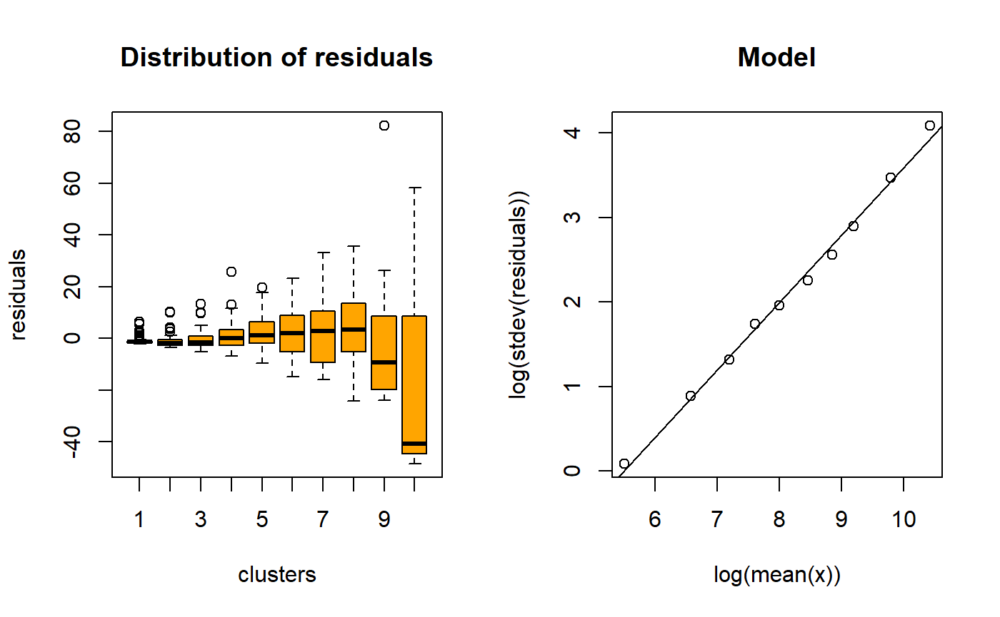
airbat <- computeGamma(mod_Airbat_POPTOT$residuals,
swiss_sample$POPTOT,
nbins = 10)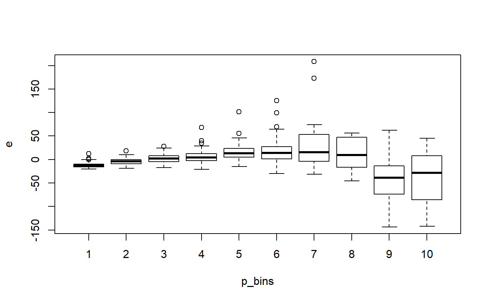
We define the sampling frame in this way:
frame <- buildFrameDF(swissmunicipalities,
id="id",
X="id",
Y=c("POPTOT","POPTOT"),
domainvalue = "dom")that is, we replicate twice the variable GDP because it will be used once for infant mortality and once for contraception.
We set 10% and 5% precision constraints on these variables:
cv <- as.data.frame(list(DOM=rep("DOM1",1),
CV1=rep(0.10,1),
CV2=rep(0.05,1),
domainvalue=c(1:1)
))
cv
#> DOM CV1 CV2 domainvalue
#> 1 DOM1 0.1 0.05 1We now proceed in building the strata dataframe using the models:
model <- NULL
model$beta[1] <- mod_Airind_POPTOT$coefficients[2]
model$sig2[1] <- airind[2]^2
model$type[1] <- "linear"
model$gamma[1] <- airind[1]
model$beta[2] <- mod_Airbat_POPTOT$coefficients[2]
model$sig2[2] <- airbat[2]^2
model$type[2] <- "linear"
model$gamma[2] <- airbat[1]
model <- as.data.frame(model)
model
#> beta sig2 type gamma
#> 1 0.00245734 0.0001511787 linear 0.7995245
#> 2 0.01192162 0.0148871469 linear 0.6419641strata <- buildStrataDF(frame, model = model, progress = FALSE)
#>
#> Computations are being done on population data
#>
#> Number of strata: 2896
#> ... of which with only one unit: 2896
head(strata)
#> STRATO N M1 M2 S1 S2 COST CENS DOM1 X1
#> 1 1 1 892.685342 4330.80350 342.994959 452.76794 1 0 1 1
#> 10 10 1 99.220025 481.35934 59.219151 110.50409 1 0 1 10
#> 100 100 1 27.822006 134.97661 21.426738 48.85160 1 0 1 100
#> 1000 1000 1 3.695840 17.93012 4.266116 13.36856 1 0 1 1000
#> 1001 1001 1 3.688468 17.89436 4.259311 13.35144 1 0 1 1001
#> 1002 1002 1 3.683553 17.87051 4.254773 13.34001 1 0 1 1002We proceed with the optimization
kmean <- KmeansSolution(strata,cv,maxclusters=10,showPlot=FALSE)
#>
#> -----------------
#> Kmeans solution
#> -----------------
#> *** Domain: 1 ***
#> Number of strata: 10
#> Sample size : 107
nstrat <- tapply(kmean$suggestions, kmean$domainvalue,
FUN=function(x) length(unique(x)))
solution <- optimStrata(
method = "atomic",
errors = cv ,
framesamp = frame,
model = model,
iter = 50,
pops = 20,
parallel = FALSE,
suggestions = kmean,
nStrata = nstrat,
showPlot = FALSE,
writeFiles = FALSE)
#>
#> Input data have been checked and are compliant with requirements
#>
#> Computations are being done on population data
#>
#> Number of strata: 2896
#> ... of which with only one unit: 2896Sequential optimization as parallel = FALSE, defaulting number of cores = 1
#> *** Domain : 1 1
#> Number of strata : 2896
#> ---------------------------------------------
#> Optimal stratification with Genetic Algorithm
#> ---------------------------------------------
#> *** Parameters ***
#> ---------------------------
#> Domain: 1
#> Maximum number of strata: 10
#> Minimum number of units per stratum: 2
#> Take-all strata (TRUE/FALSE): FALSE
#> number of sampling strata : 2896
#> Number of target variables: 2
#> Number of domains: 1
#> Number of GA iterations: 50
#> Dimension of GA population: 20
#> Mutation chance in GA generation: NA
#> Elitism rate in GA generation: 0.2
#> Chance to add strata to maximum: 0
#> Allocation with real numbers instead of integers: TRUE
#> *** Sample cost: 104.2297
#> *** Number of strata: 10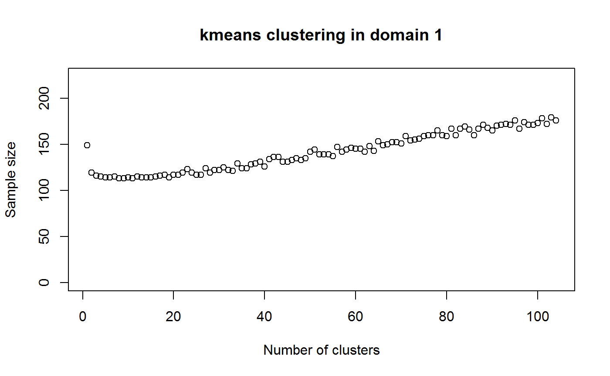
#>
#> *** Sample size : 105
#> *** Number of strata : 10
#> ---------------------------What about the expected CV’s?
newstrata <- updateStrata(strata,solution)
framenew <- updateFrame(frame,newstrata)
framenew <- framenew[order(framenew$ID),]
framenew$Y1 <- swissmunicipalities$Airind
framenew$Y2 <- swissmunicipalities$Airbat
results <- evalSolution(framenew, solution$aggr_strata, 200, progress = FALSE)
results$coeff_var
#> CV1 CV2 dom
#> 1 0.0952 0.0386 DOM1These two CV’s regard respectively industrial area and building area: they are more than compliant with the precision constraints (10% and 5%).
Optimization with the continuous method
When method “continuous” is chosen, optimStrata makes use of a different genetic algorithm, operating on a genome represented by vector containing real values, instead of integers. This permits to operate directly on the boundaries of the strata, instead of aggregating the initial atomic strata. In some situations (not exceedingly too big size of the sampling frame) this new function is much more efficient. Furthermore, resulting strata are guaranteed to not overlap with respect to the different stratification variables. A major limitation is in the nature of the stratification variables, that are required to be all continuous (though categorical ordinal can be handled). Another one is in the fact that it is necessary to choose the number of strata (it is not optimally determined during the evolution process as in the case of atomic method).
To operate with “continuous” method it is no more necessary to produce the strata dataframe.
Let us consider the following example:
data("swissmunicipalities")
swissmunicipalities$id <- c(1:nrow(swissmunicipalities))
swissmunicipalities$dom <- 1
frame <- buildFrameDF(swissmunicipalities,
id = "id",
domainvalue = "REG",
X = c("Surfacesbois","Surfacescult"),
Y = c("Pop020", "Pop2040")
)
# choice of units to be selected in any case (census units)
framecens <- frame[frame$X1 > 2500
| frame$X2 > 1200,]
# remaining units
framesamp <- frame[!(frame$id %in% framecens$id),]
# precision constraints
errors <- NULL
errors$DOM <- "DOM1"
errors$CV1 <- 0.1
errors$CV2 <- 0.1
errors <- as.data.frame(errors)
errors <- errors[rep(row.names(errors),7),]
errors$domainvalue <- c(1:7)
errors
#> DOM CV1 CV2 domainvalue
#> 1 DOM1 0.1 0.1 1
#> 1.1 DOM1 0.1 0.1 2
#> 1.2 DOM1 0.1 0.1 3
#> 1.3 DOM1 0.1 0.1 4
#> 1.4 DOM1 0.1 0.1 5
#> 1.5 DOM1 0.1 0.1 6
#> 1.6 DOM1 0.1 0.1 7By so doing, we have chosen two stratification variables (Surfacesbois and Surfacescult) and two target variables (Pop020 and Pop2040), on both of which we have set the same precision constraint (a maximum CV equal to 10%).
Now the execution of the optimization step (for the domain 4) using optimizeStrata2 is straightforward, as we do not need to categorize stratification variables and to generate the atomic strata:
solution <- optimStrata (
method = "continuous",
errors = errors,
framesamp = framesamp,
framecens = framecens,
strcens = TRUE,
alldomains = FALSE,
dom = 4,
iter = 50,
pops = 20,
nStrata = 5,
writeFiles = FALSE,
showPlot = FALSE,
parallel = FALSE
)
#>
#> Input data have been checked and are compliant with requirements
#>
#> Input data have been checked and are compliant with requirements
#>
#> Input data have been checked and are compliant with requirements
#> Sequential optimization as parallel = FALSE, defaulting number of cores = 1
#> *** Sample cost: 33.54174
#> *** Number of strata: 5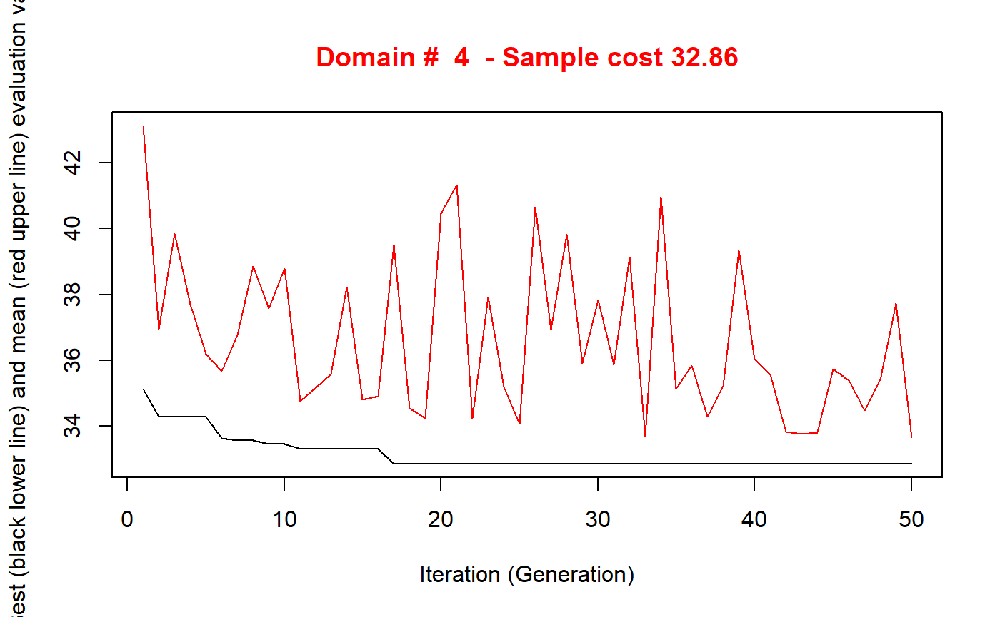
#>
#> *** Sample size : 27
#> *** Number of strata : 5
#> ---------------------------sum(round(solution$aggr_strata$SOLUZ))
#> [1] 33
expected_CV(solution$aggr_strata)
#> cv(Y1) cv(Y2)
#> DOM1 0.1 0.099This function also outputs the new version of the overall frame (sampling plus census), already provided with the labels indicating to which stratum each unit belongs:
framenew <- solution$framenew
table(framenew$LABEL)
#>
#> 1 2 3 4 5 6
#> 44 29 38 51 3 6The first 5 strata are the ones pertaining to sampling units, the 6th is the one with censused units.
To inspect the structure of the strata, the function summaryStrata is available:
strataStructure <- summaryStrata(solution$framenew,solution$aggr_strata,progress=FALSE)
strataStructure
#> Domain Stratum Population Allocation SamplingRate Lower_X1 Upper_X1 Lower_X2
#> 1 4 1 44 7 0.163591 5 297 40
#> 2 4 2 29 2 0.086157 64 509 236
#> 3 4 3 38 5 0.134316 33 617 353
#> 4 4 4 51 10 0.191003 85 1911 511
#> 5 4 5 3 3 1.000000 168 2326 967
#> 6 4 6 6 6 1.000000 261 2807 1204
#> Upper_X2
#> 1 216
#> 2 344
#> 3 506
#> 4 890
#> 5 1142
#> 6 1827It is also possible to visually investigate the distribution of population units in the strata by using the function plotStrata2d:
outstrata <- plotStrata2d(
solution$framenew,
solution$aggr_strata,
domain = 4,
vars = c("X1","X2"),
labels = c("Surfacesbois","Surfacescult")
)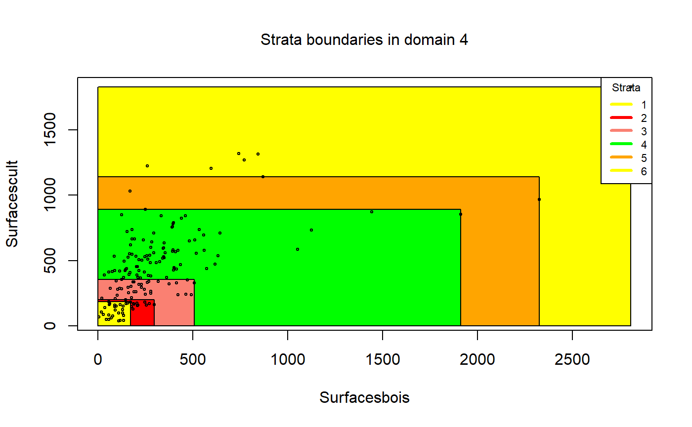
Together with the plot, also a tabular format of the optimized strata is produced by plotStrata2d:
| Stratum | Population | Allocation | SamplingRate | Bounds Surfacesbois | Bounds Surfacescult |
|---|---|---|---|---|---|
| 1 | 44 | 7 | 0.1635913 | 5-297 | 40-216 |
| 2 | 29 | 2 | 0.0861571 | 64-509 | 236-344 |
| 3 | 38 | 5 | 0.1343157 | 33-617 | 353-506 |
| 4 | 51 | 10 | 0.1910033 | 85-1911 | 511-890 |
| 5 | 3 | 3 | 1.0000000 | 168-2326 | 967-1142 |
| 6 | 6 | 6 | 1.0000000 | 261-2807 | 1204-1827 |
Finally, the selection of the sample is performed by using the same function selectSample, but this time is no more necessary to handle separately units to be sampled and units to be censused:
samp <- selectSample(solution$framenew,solution$aggr_strata)
#>
#> *** Sample has been drawn successfully ***
#> 33 units have been selected from 6 strata
#>
#> ==> There have been 2 take-all strata
#> from which have been selected 9 unitsOptimization with the spatial method
In order to illustrate the “spatial” method, we make use of a dataset generally employed as an example of spatially correlated phenomena (in this case, the concentration of four heavy metals in a portion of the river Meuse). This dataset comes with the library “sp”:
library(sp)
# locations (155 observed points)
data("meuse")
# grid of points (3103)
data("meuse.grid")
meuse.grid$id <- c(1:nrow(meuse.grid))
coordinates(meuse)<-c("x","y")
coordinates(meuse.grid)<-c("x","y")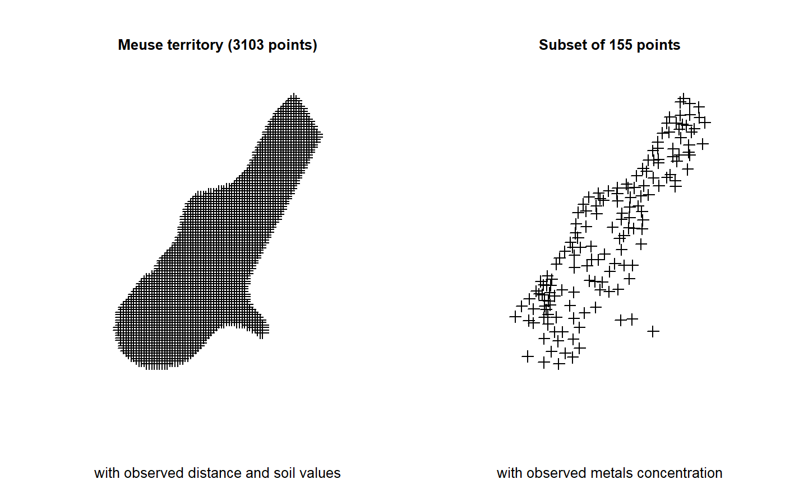
We analyse the territorial distribution of the lead concentration, and model its relations with distance from the river and with the soil type, by using the subset of 155 points on which these values have been jointly observed:
library(gstat)
#> Registered S3 method overwritten by 'xts':
#> method from
#> as.zoo.xts zoo
library(automap)
v <- variogram(lead ~ dist + soil, data=meuse)
fit.vgm <- autofitVariogram(lead ~ elev + soil, meuse, model = "Exp")
plot(v, fit.vgm$var_model)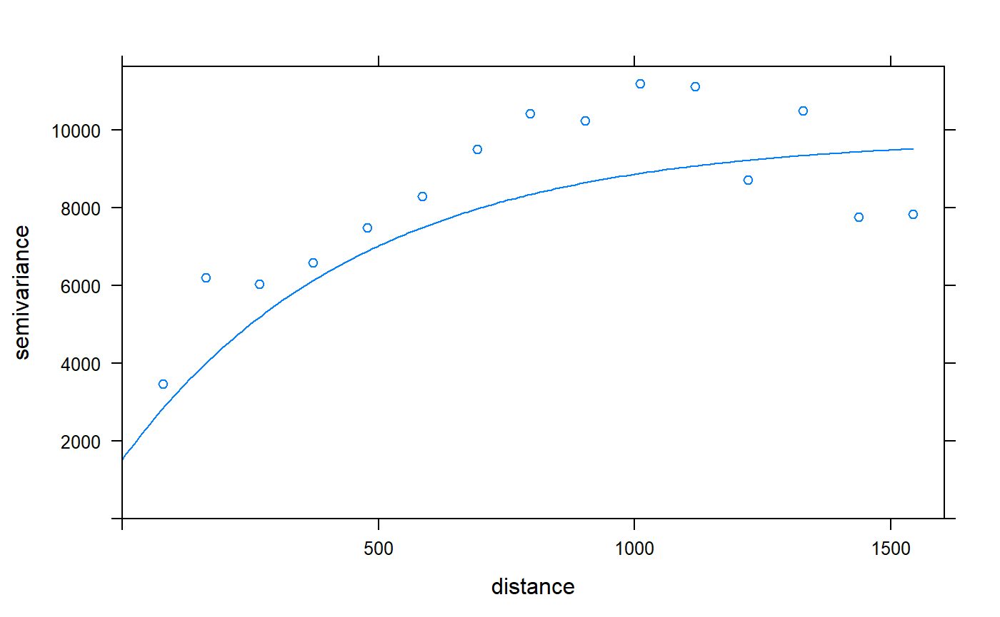
g <- NULL
g <- gstat(g, "Pb", lead ~ dist + soil, meuse)
g
#> data:
#> Pb : formula = lead`~`dist + soil ; data dim = 155 x 12
vm <- variogram(g)
vm.fit <- fit.lmc(vm, g, vgm(psill=fit.vgm$var_model$psill[2],
model="Exp", range=fit.vgm$var_model$range[2],
nugget=fit.vgm$var_model$psill[1]))Using this kriging model, we are able to predict the values of lead concentration on the totality of the 3,103 points in the Meuse territory:
preds <- predict(vm.fit, meuse.grid)
#> [using universal kriging]
names(preds)
#> [1] "Pb.pred" "Pb.var"
# [1] "Pb.pred" "Pb.var"
preds$Pb.pred <- ifelse(preds$Pb.pred < 0,0,preds$Pb.pred)
df <- NULL
df$id <- meuse.grid$id
df$Pb.pred <- preds@data$Pb.pred
df$Pb.var <- preds@data$Pb.var
df$lon <- meuse.grid$x
df$lat <- meuse.grid$y
df$dom1 <- 1
df <- as.data.frame(df)The aim is now to produce the optimal stratification of the 3,103 points under a precision constraint of 5% on the target estimate of the mean lead concentration:
frame <- buildFrameSpatial(df=df,
id="id",
X=c("Pb.pred"),
Y=c("Pb.pred"),
variance=c("Pb.var"),
lon="lon",
lat="lat",
domainvalue = "dom1")
cv <- as.data.frame(list(DOM=rep("DOM1",1),
CV1=rep(0.05,1),
domainvalue=c(1:1) ))
set.seed(1234)
solution <- optimStrata (
method = "spatial",
errors=cv,
framesamp=frame,
iter = 50,
pops = 10,
nStrata = 3,
fitting = 1,
range = fit.vgm$var_model$range[2],
kappa=1,
writeFiles = FALSE,
showPlot = FALSE,
parallel = FALSE)
#>
#> Input data have been checked and are compliant with requirements
#> Sequential optimization as parallel = FALSE, defaulting number of cores = 1
#> *** Domain : 1 1
#> Number of strata : 3103
#> *** Sample cost: 127.3081
#> *** Number of strata: 3
#>
#> *** Sample size : 128
#> *** Number of strata : 3
#> ---------------------------
framenew <- solution$framenew
outstrata <- solution$aggr_strataThis is the structure of the obtained strata:
sum(round(outstrata$SOLUZ))
#> [1] 128
expected_CV(outstrata)
#> cv(Y1)
#> DOM1 0.05
ss <- summaryStrata(framenew,outstrata)
#>
|
| | 0%
|
|======================================================================| 100%
ss
#> Domain Stratum Population Allocation SamplingRate Lower_X1 Upper_X1
#> 1 1 1 1360 53 0.038906 0.0000 101.6446
#> 2 1 2 1073 43 0.039848 101.7265 198.1577
#> 3 1 3 670 32 0.047223 198.4284 502.9274that can be visualised in this way:
frameres <- SpatialPointsDataFrame(data=framenew, coords=cbind(framenew$LON,framenew$LAT) )
frameres2 <- SpatialPixelsDataFrame(points=frameres[c("LON","LAT")], data=framenew)
frameres2$LABEL <- as.factor(frameres2$LABEL)
spplot(frameres2,c("LABEL"), col.regions=bpy.colors(5))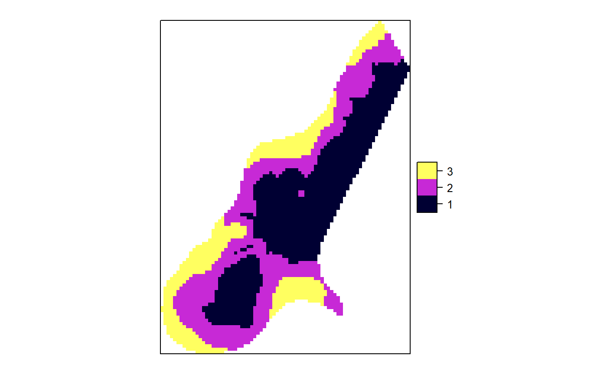
Appendix - Methodological approach
In a stratified sampling design with one or more stages, a sample is selected from a frame containing the units of the population of interest, stratified according to the values of one or more auxiliary variables (X) available for all units in the population.
For a given stratification, the overall size of the sample and the allocation in the different strata can be determined on the basis of constraints placed on the expected accuracy of the various estimates regarding the survey variables (Y).
If the target survey variables are more than one the optimization problem is said to be multivariate; otherwise it is univariate.
For a given stratification, in the univariate case the optimization of the allocation is in general based on the Neyman allocation. In the univariate case it is possible to make use of the Bethel algorithm.
The criteria according to which stratification is defined are crucial for the efficiency of the sample.
With the same precision constraints, the overall size of the sample required to satisfy them may be significantly affected by the particular stratification chosen for the population of interest.
Given G survey variables, their sampling variance is:
\[Var(\hat{Y_{g}})=\sum_{h=1}^{H}N_{h}^{2} (1- \frac{ n_{h}} {N_{h}}) \frac{ S_{h,g}^{2}} {n_{h}} \;\;\; g=1,...,G\]
If we introduce the following cost function:
\[C(n_{1},...,n_{H})=C_{0}+\sum_{h=1}^{H}C_{h}n_{h} \]
the optimization problem can be formalized in this way:
\[min= C_{0}+\sum_{h=1}^{H}C_{h}n_{h}\\ \] under the constraints \[ \begin{cases} CV(\hat{Y_{1}}) < U_{1}\\ CV(\hat{Y_{2}}) < U_{2}\\ ...\\ CV(\hat{Y_{G}}) < U_{G}\\ \end{cases} \] where \[ CV(\hat{Y_{g}}) = \frac{\sqrt{Var(\hat{Y_{g}})} } {mean(\hat{Y_{g}})}\]
Given a population frame with m auxiliary variables \(X_{1},..., X_{M}\) we define as atomic stratification the one that can be obtained considering the cartesian product of the definition domains of the m variables. \[L=\{(l_{1}),(l_{2}),...,(l_{k})\}\] Starting from the atomic stratification, it is possible to generate all the different stratifications that belong to the universe of stratifications. For example:
\[ \begin{align*} &P_{1}=\{(l_{1},l_{2},l_{3})\} & P_{2}=\{(l_{1}),(l_{2},l_{3})\} \\ &P_{2}=\{(l_{2}),(l_{1},l_{3})\} & P_{4}=\{(l_{31}),(l_{1},l_{2})\} \\ &P_{5}=\{(l_{1}),(l_{2}),(l_{k})\} \end{align*} \]
The number of feasible stratifications is exponential with respect to the number of initial atomic strata:
\[ \begin{align*} & B_{4}=15 & B_{10}=115975 & & B_{100}\approx 4.76 \times 10^{115} \end{align*} \]
In concrete cases, it is therefore impossible to examine all the different possible alternative stratifications. The Genetic Algorithm allows to explore the universe of stratification in a very efficient way in order to find the optimal (or close to optimal) solution.
In planning a strafied sampling for a given survey, proceed as follows:
given the survey variables \(Y_{1},Y_{2},...,Y_{p}\), set precision constraints on their estimates in the different domains, expressed in terms of CVs (coefficients of variation);
in the available sampling frame build the atomic stratification, obtained as cartesian product of the domains of the auxiliary variables \(X_{1},...,X_{M}\);
in each atomic stratum report the distributional characteristics of the survey variables by calculating their means and standard deviations calculate the values of the population (directly or by using proxy variables);
on the basis of these inputs, the Genetic Algorithm determines the best solution in terms of both frame stratification, sample size and allocation in optimized strata.
The application of the genetic algorithm is based on the following steps:
a given stratification is considered as an individual in a population (= generation) subject to evolution;
each individual is characterized by a genome represented by a vector of dimension equal to the number of atomic strata: the position of each element in the vector identifies an atomic stratum;
each element in the vector is assigned a random value between 1 and K (maximum acceptable number of strata): the vector therefore indicates the way in which the individual atomic strata are aggregated together;
for each individual (stratification) its fitness is calculated by solving the corresponding problem of optimal allocation by means of Bethel’s algorithm;
in passing from one generation to the next, individuals with higher fitness are favored;
at the end of the process of evolution, the individual with the overall best fitness represents the optimal solution.
References
Baillargeon, Sophie, and Louis-Paul Rivest. 2014. Stratification: Univariate Stratification of Survey Populations. https://CRAN.R-project.org/package=stratification.
Ballin, Marco, and Giulio Barcaroli. 2016. “Optimization of Stratified Sampling with the R Package SamplingStrata: Applications to Network Data.” Computational Network Analysis with R: Applications in Biology, Medicine and Chemistry.
Ballin, M., and G. Barcaroli. 2013. “Joint Determination of Optimal Stratification and Sample Allocation Using Genetic Algorithm.” Survey Methodology 39: 369–93.
Barcaroli, G. 2014. “SamplingStrata: An R Package for the Optimization of Stratified Sampling.” Journal of Statistical Software 61 (4): 1–24. https://www.jstatsoft.org/article/view/v061i04.
Hartigan, J. A., and M. A. Wong. 1979. “A K-Means Clustering Algorithm.” Applied Statistics 28: 100–108.
O’Luing, M., S. Prestwich, and S. Armagan Tarim. 2019. “A Grouping Genetic Algorithm for Joint Stratification and Sample Allocation Designs.” Survey Methodology 45 (3): 513–31.
Willighagen, E. 2005. Genalg: R Based Genetic Algorithm. https://CRAN.R-project.org/package=genalg.